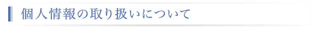

和心システム株式会社（以下、当社といいます。）は、適用される法令、規範、及び当社の個人情報保護方針の定めに基づき、取得致しました個人情報について、その保護の重要性を認識し、以下の通り取扱いを行います。
1．個人情報取得と利用目的
当社は､当社の製品・サービスを提供させて頂くこと、及び当社の採用活動に伴い、事業や業務遂行上必要となる個人情報を取得させて頂きます。
【事業内容】
・情報処理システム構築に関するコンサルテーション
・情報処理システムの設計、開発、保守及びSEサービス
・各種ソフトウエアの開発及び保守サービス
・Webサイト構築支援、運営
・電子書店”本屋でござ～る”の開設、運営
その他 上記に付帯する関連業務
取得にあたり、本人から書面に記載された個人情報を直接に取得または情報を入力頂いて個人情報を取得する場合は、あらかじめ利用目的を明示し、本人の同意を得て取得します。 それ以外の方法により個人情報を取得する場合の利用目的は以下に記載する通りとし、その目的の範囲内で個人情報を取り扱います。
【利用目的】
・ホームページのお問い合せ画面から取得した個人情報は、お問い合せ頂いた方へ回答するために使用します。
・ホームページ以外から取得した個人情報の利用目的は以下の通りです。
a.お客様へ当社の取扱商品、当社が提供する技術サービス、保守サービスに関するご案内を送付するため
b.お客様へ販売した取扱商品のアフターサービスを実施させて頂くご案内を送付するため
c.お客様へ新たな取扱商品や新商品の展示会イベント、販売キャンペーンのご案内を送付するため
d.入社希望者の方へ当社採用に必要なご案内（書類選考、筆記試験、面接）を送付するため
（ホームページのお問い合せ画面の内容によりa.～d.の案内を送付する場合があります）
なお、当社は、業務委託により預託を受けた個人情報については、受託した業務の範囲で取り扱います。
個人情報の提供は本人の任意です。提供して頂けないことにより、当社からの案内やサービス提供などが受けられない場合があることをご了承願います。
2．個人情報の目的外利用について
上記の利用目的以外で個人情報を利用する必要が生じた場合には、法により許される場合を除き、改めて利用目的をお知らせし、本人の同意を得るものとします。
3．個人情報の管理について
当社では、取得致しました個人情報について、適用される法令、規範を遵守するとともに、当社の個人情報保護方針に従って適切に管理致します。
4．個人情報の委託について
当社は、外部に個人情報を委託する場合があります。その場合は委託先と秘密保持契約を取り交わし、当社の厳正な管理の下で行います。
5．個人情報の第三者への提供について
当社は、ご提供いただいた個人情報につきましては、以下の場合に限り、上記利用目的を達成するためお客様の同意を得ずに第三者へ提供させていただく場合がございます。
・社外への業務委託のための利用
お客様の個人情報を、上記利用目的の範囲内で、宅配便業者などの業務委託先へ預託・提供等する場合がございます。
・法令等に基づく利用
法令等に基づき、裁判所・警察機関などの公的機関から開示の要請があったとき、当該公的機関に提供する場合がございます。
6．開示対象個人情報に関する事項の周知など
当社は、取得した個人情報が開示対象個人情報に該当する場合は、当該開示個人情報に関し、次の事項を本人が知り得る状態（本人の求めに応じて遅滞なく回答する場合を含む）に置くものとします。
１）個人情報取扱事業者の名称
和心システム株式会社
２）個人情報保護管理責任者
総務部 部長 TEL 03-3572-2488
３）すべての開示対象個人情報の利用目的
１．個人情報取得と利用目的 に示す
なお、以下に示すいずれかに該当する場合、公表は差し控えます。
ａ）利用目的を本人に通知し、又は公表することによって本人又は第三者の生命、身体、財産その他の権利利益を害するおそれがある場合。
ｂ）利用目的を本人に通知し、又は公表することによって当社の権利又は正当な利益を害するおそれがある場合。
ｃ）国の機関又は地方公共団体が法令の定める事務を遂行することに対して協力する必要がある場合であって、利用目的を本人に通知し、又は公表することによって当該事務の遂行に支障を及ぼすおそれがあるとき。
４）開示対象個人情報の取扱いに関する苦情の申し出先
お客様相談窓口：和心システム株式会社 総務部
TEL 0120-02-7055 FAX 03-5568-7627 E-mail privacy@washin.co.jp
５）認定個人情報保護団体の名称および苦情の解決の申し出先
プライバシーマーク付与認定指定機関
一般財団法人日本情報経済社会推進協会（ＪＩＰＤＥＣ） 個人情報保護苦情相談室
〒106-0032 東京都港区六本木一丁目９番９号六本木ファーストビル内
TEL 03-5860-7565
フリーダイヤル 0120-700-779（※受付時間 平日9：30～12：00,13：00～16：30）
６）開示などの求めに応じる手続き
ａ）開示等の求めの申出先
お客様相談窓口：和心システム株式会社 総務部
TEL 0120-02-7055 FAX 03-5568-7627 E-mail privacy@washin.co.jp
ｂ）開示などの求めに際して提出すべき書面の様式その他の開示などの求めの方式
「個人情報開示・利用目的通知・訂正・削除請求書」を郵送させていただきますので、ご希望の方は相談窓口にお申し付けください。「個人情報開示・利用目的通知・訂正・削除請求書」に所定の事項をご記入の上、本人（代理人）を確認できる書面と併せて弊社に返送いただきますようお願い致します。
又、回答は「個人情報開示・利用目的通知・訂正・削除請求書」及び本人確認書類により確認できた請求者の住所へ郵送（書留）いたします。回答時期は必要書類を受領後概ね２週間後となります。
ｃ）開示などの求めをする者が、本人又は代理人であることの確認の方法
「個人情報開示・利用目的通知・訂正・削除請求書」に記載する方法で確認致します
ｄ）利用目的の通知又は開示による場合の手数料の徴収方法
本人からの求めに応じる場合に手数料を徴収するときは、金額、支払方法を記した請求書を回答に同封しお送りします。